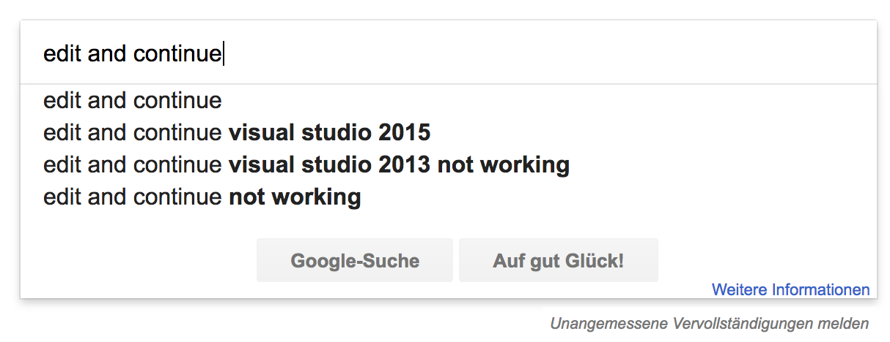
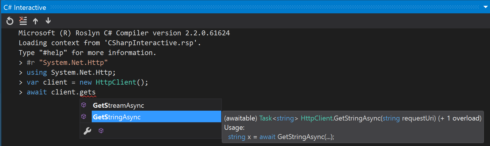
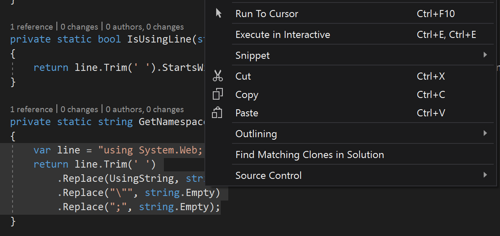
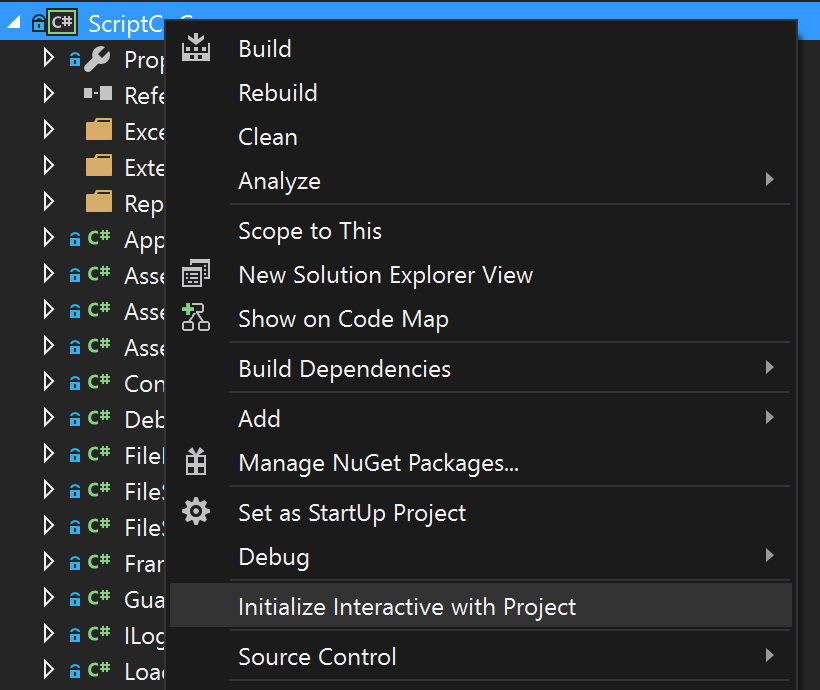
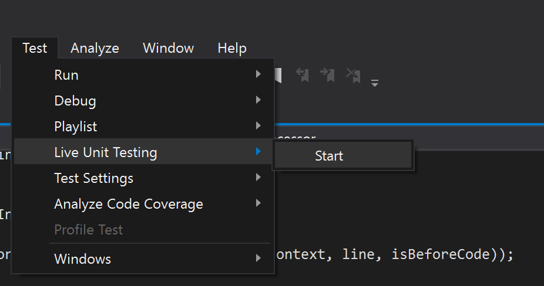
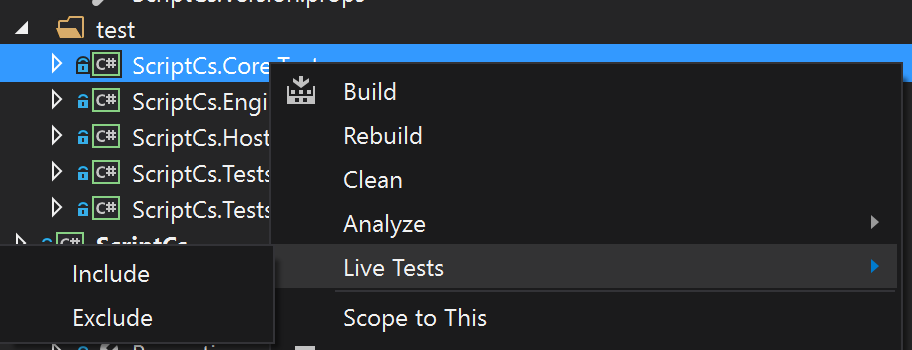
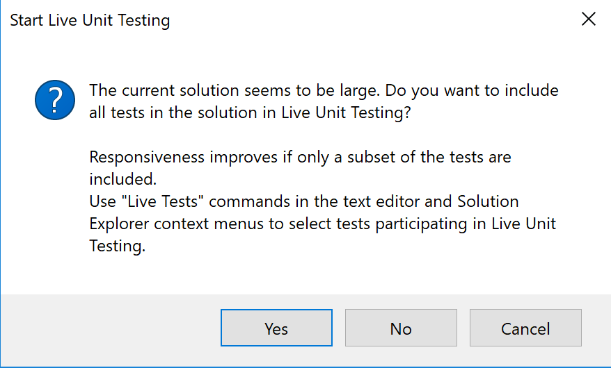
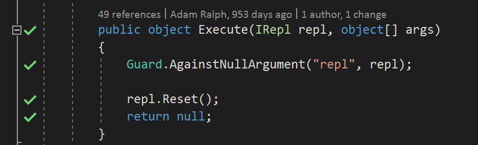
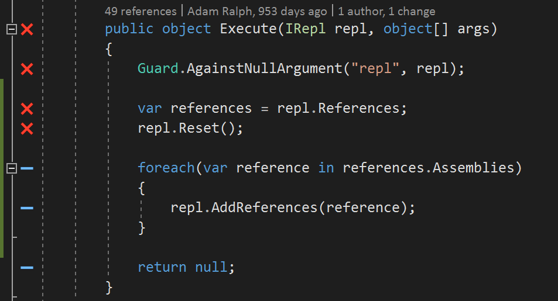

dotnet watch is a dotnet CLI tool that runs a specific dotnet CLI
command, with a specified set of parameters, as soon as any source file changes in the project.
C:\app>dotnet watch run
C:\app>dotnet watch run -f net462
C:\app>dotnet watch test
C:\app>dotnet watch script foo.csx
Running dotnet watcher
C:\code\IdentityWebApp>dotnet watch run
watch : Started
Hosting environment: Production
Content root path: C:\code\IdentityWebApp
Now listening on: http://localhost:5000
Application started. Press Ctrl+C to shut down.
watch : Exited with error code 1
watch : File changed: C:\code\IdentityWebApp\Translation\JwtTranslationGrant.cs
watch : Started
Hosting environment: Production
Content root path: C:\code\IdentityWebApp
Now listening on: http://localhost:5000
Application started. Press Ctrl+C to shut down.
Any executable on the PATH that follows the dotnet-{name} format can
be used with dotnet CLI. It can then be used with watch: dotnet watch name.
Edit and Continue
Edit-and-Continue was already present in "Visual Studio .NET 2003",
but only for C/C++ code. Since Visual Studio 2005 you can make changes to code in break mode while debugging.
They are applied to the CLR directly without a need to restart the debugging
session.
Program logic should not be tested in the debugger. You are wasting your time and your company's
time if you do so.
Edit and continue is a bug-introducing machine. Why? Because you get to focusing on that one bug
and twiddle the code to fix that one bug and introduce six more.

Roslyn introduced a ton of improvements to Edit-and-Continue, as the entire compiler part of that functionality was rewritten.
🦄 Allowed changes
Within Method/Property Bodies
most changes
Within Types
add methods, fields, constructors, nested types
Visual Studio 2017 Version 15.3 introduces Edit-and-Continue
for C# 7 features.
Edit And Continue with Roslyn (before)
class Program
{
public static void Main()
{
Console.WriteLine(1);
}
}
Edit And Continue with Roslyn (after)
class Program
{
public static void Main()
{
Console.Write(2);
}
}
// read metadata from the original compilation or using metadata reader
var originalMetadata = AssemblyMetadata.CreateFromStream(originalCompilationStream);
var baseline = EmitBaseline.CreateInitialBaseline(originalMetadata.GetModules()[0],
handle => default(EditAndContinueMethodDebugInformation));
MemoryStream mdStream = new MemoryStream(), ilStream = new MemoryStream(), pdbStream = new MemoryStream();
var updatedMethods = new List<MethodDefinitionHandle>();
var edits = new[] {
new SemanticEdit(SemanticEditKind.Update,
originalCompilation.GlobalNamespace.GetMembers("Program").First().GetMembers("Main").First(),
changedCompilation.GlobalNamespace.GetMembers("Program").First().GetMembers("Main").First())
};
var emitDifferenceResult = changedCompilation.EmitDifference(baseline, edits, mdStream, ilStream, pdbStream, updatedMethods);
// ilStream and mdStream can be now applied to the CLR
A Read–Eval–Print Loop (REPL), also known as an interactive toplevel
or language shell, is a simple, interactive computer programming environment that takes single user inputs (i.e. single expressions), evaluates them, and returns the result
to the user; a program written in a REPL environment is executed piecewise.
C# REPLs
CSI (C# Interactive)
Official Roslyn script runner and REPL
scriptcs
Rich and extensible command infrastructure
Mono
Used to work x-plat before Roslyn
Online C# REPL
csharppad.com
CSI is bundled with MSBuild Tools. It supports Desktop .NET only, but works cross platform via Mono.
~/Documents$ csi
Microsoft (R) Visual C# Interactive Compiler version 42.42.42.42424
Copyright (C) Microsoft Corporation. All rights reserved.
Type "#help" for more information.
> #r "System.Net.Http"
> using System.Net.Http;
> var client = new HttpClient();
> await client.GetStringAsync("https://gist.githubusercontent.com/filipw/7c22467439759c5f56cb2154717cdbe8/raw/93a4d2aa8034426c4ebcd20c67ac73daa11761dc/hello.txt");
"Hello from a gist"
>
// REPL global variables are compiled into fields
var numbers = new[] { 1, 2, 3, 4 };
// this is legal in a C# REPL
// in "regular" C# such shadowing produces CS0136
var x = numbers.Where(x => x % 2 == 0);
Surprises
// each submission gets it's own async execution context
// as a result, AsyncLocal doesn't work
> using System.Threading;
> var msg = new AsyncLocal<string>();
> msg.Value = "hello";
> msg.Value
null
Surprises
// submission code is always wrapped into a wrapper type
> class Foo { }
> typeof(Foo).IsNested
true
Surprises
// namespaces are not allowed
> namespace Foo { }
(1,1): error CS7021: Cannot declare namespace in script code
>
Surprises
// regular extension methods are not allowed
> var dateString = "2013-1-25";
> static class Ext {
public static bool IsDate(this string val) {
return DateTime.TryParse(val, out var dt);
}
}
"(1,39): error CS1109: Extension methods must be defined in a top level static class; Ext is a nested class"
Surprises
// on the other hand, loose extension methods are allowed
> var dateString = "2013-1-25";
> public static bool IsDate(this string val) {
return DateTime.TryParse(val, out var dt);
}
> dateString.IsDate();
true
C# Interactive Window
C# Interactive Window is built into Visual Studio. It can be found
under View > Other Windows menu.
Main C# Interactive Window Features
📝 Intellisense & Colorization
Completion services - same as those powering Visual Studio - are available
📜 History navigation
Cycle through submissions
🏓 Integration With Open Solution
Send references and code into C# Interactive Window
🌽 Seeding
C# Interactive Window can be seeded with references/using statements from a file
C# Interactive Window shares most of the code with CSI (the command
line REPL).
Because of that same C# "gotchas" apply.



C# Interactive Window Features
All of the features of CSI are supported, plus:
#reset
Reset the execution environment to the initial state
#cls
Clear the execution window
ctrl+alt+arrow / alt+arrow
History navigation
At the moment C# Interactive Window does not support .NET Core.
Xamarin Workbooks
Xamarin Workbooks provide a fantastic mix of a C# REPL and documentation.
Workbook files are stored as Markdown files.
---
uti: com.xamarin.workbook
title: What's New in C# 7 | C# Guide
platforms:
- Console
---
## `out` variables
The existing syntax that supports `out` parameters has been improved in this version.
```csharp
var input = "8675309";
int numericResult;
if (int.TryParse(input, out numericResult))
Console.WriteLine(numericResult);
else
Console.WriteLine("Could not parse input");
```
You can now declare `out` variables in the argument list of a method call, rather than writing a separate declaration statement:
```csharp
if (int.TryParse(input, out int result))
Console.WriteLine(result);
else
Console.WriteLine("Could not parse input");
```
Main Xamarin Workbooks Features
📝 Intellisense & Colorization
Completion services powered by Roslyn
🎁 Nuget package integration
Reference Nuget packages from within the workbook
🌈 Multi-platform and GUI support
Console, Android, iOS, Mac, WPF
📇 Rich Text Editor for Markdown
Using the CommonMark spec
Internally, Xamarin Workbooks uses Roslyn submissions to provide its
REPL-like features.
Live Unit Testing
Live Unit Testing was introduced in Visual Studio 2017. At the moment it is available only for
Visual Studio Enterprise.
Starting Live Unit Testing globally

Starting Live Unit Testing per project

Unsupported Framework
[20:01:31.934 Error] Outdated package 'xunit'. Installed version: '1.9.2'.
Minimum supported version: '2.0.0'. Please update the package.
[20:01:31.949 Error] No test adapters are referenced by this solution.
If you have a test project, add a NuGet reference to a test adapter corresponding to the test framework used in order to run the tests.
If you already have the required NuGet reference in your test project, performing a NuGet restore may resolve the issue.
[20:01:31.949 Info] Start failed.
[20:01:31.965 Info] Live Unit Testing stopped.
Minimum Framework Versions
Framework
Version
Test Adapter
xUnit
2.0.0+
xunit.runner.visualstudio 2.2.0+
NUnit
3.5.0+
NUnit3TestAdapter 3.5.1+
MSTest
1.1.11+
MSTest.TestAdapter 1.1.11+
UNC Path
[22:29:08.780 Info] Live Unit Testing started.
[22:29:17.843 Info] Build completed (succeeded).
[22:29:18.890 Error] - FatalError - System.AggregateException: One or more errors occurred. ---> System.IO.DirectoryNotFoundException: Could not find a part of the path '\\Mac\Home\Documents\dev\scriptcs\.vs\ScriptCs\16636\t\test\ScriptCs.Core.Tests\bin\Debug\ScriptCs.Core.Tests.dll'.
at System.IO.__Error.WinIOError(Int32 errorCode, String maybeFullPath)
at System.IO.FileStream.Init(String path, FileMode mode, FileAccess access, Int32 rights, Boolean useRights, FileShare share, Int32 bufferSize, FileOptions options, SECURITY_ATTRIBUTES secAttrs, String msgPath, Boolean bFromProxy, Boolean useLongPath, Boolean checkHost)
at System.IO.FileStream..ctor(String path, FileMode mode, FileAccess access, FileShare share)
at Microsoft.CodeAnalysis.LiveUnitTesting.Aggregation.FileSpanCache.ReadAssembly(String assemblyFullPath, AssemblyIdentifier assembly)
at Microsoft.CodeAnalysis.LiveUnitTesting.Aggregation.CoverageDataManager.PopulateSpanInformation(String buildOutputRootPath, AssemblyIdentifier assembly)
at Microsoft.CodeAnalysis.LiveUnitTesting.Aggregator.<>c__DisplayClass26_0.<UpdateSpanInformation>b__1(AssemblyIdentifier assembly)
at System.Threading.Tasks.Parallel.<>c__DisplayClass31_0`2.<ForEachWorker>b__0(Int32 i)
at System.Threading.Tasks.Parallel.<>c__DisplayClass17_0`1.<ForWorker>b__1()
at System.Threading.Tasks.Task.InnerInvokeWithArg(Task childTask)
at System.Threading.Tasks.Task.<>c__DisplayClass176_0.<ExecuteSelfReplicating>b__0(Object )
Large Solution

Everything OK

As soon as Filip addded some logic

Random Errors
[22:12:46.665 Info] Live Unit Testing started.
[22:12:53.060 Info] Build completed (succeeded).
[22:13:10.551 Info] Build completed (succeeded).
[22:13:12.820 Error] Live Unit Testing has been turned off because 'Microsoft.CodeAnalysis.LiveUnitTesting.EntryPoint.exe' process has exited unexpectedly.
Try turning it back on again via the 'Test -> Live Unit Testing -> Start' menu.
[22:13:12.820 Info] Live Unit Testing stopped.
Visual Studio 2017 Version 15.3 introduces Live Unit
Testing for .NET Core projects.
Plenty of library-specific ones
For example: https://github.com/xunit/xunit.analyzers
[DiagnosticAnalyzer(LanguageNames.CSharp)]
public class RemoveRegionAnalyzer : DiagnosticAnalyzer
{
public const string DiagnosticId = "RemoveRegionAnalyzer";
private const string Category = "Naming";
private static DiagnosticDescriptor Rule = new DiagnosticDescriptor(DiagnosticId, "Regions are banned",
"Region '{0}' can't be used. In fact no regions can.", "Sanity", DiagnosticSeverity.Error,
isEnabledByDefault: true);
public override ImmutableArray<DiagnosticDescriptor> SupportedDiagnostics => ImmutableArray.Create(Rule);
public override void Initialize(AnalysisContext context)
{
context.RegisterSyntaxNodeAction(ctx => {
var diagnostic = Diagnostic.Create(Rule, context.Node.GetLocation());
context.ReportDiagnostic(diagnostic);
}, ImmutableArray.Create(SyntaxKind.RegionDirectiveTrivia, SyntaxKind.EndRegionDirectiveTrivia));
}
}
Analyzers & refactorings reference Roslyn DLLs from Visual Studio.
Building an analyzer against Roslyn 1.0.0, allows it to run in Visual Studio 2015. Targetting newer
Roslyn, restricts it to newer VS version only.